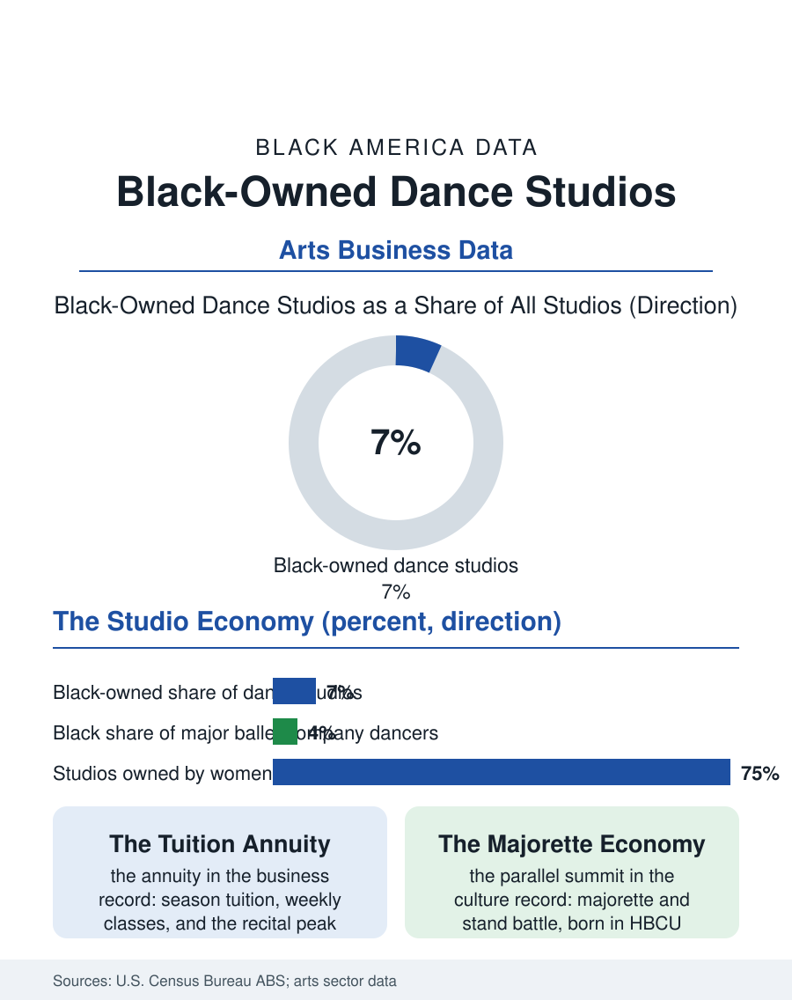

Black Business
The Strip-Mall Conservatory: Black-Owned Dance Studios
Black-owned dance studios are the strip-mall conservatories of Black America, durable women-owned businesses negotiating ballet's closed door and majorette's open one. The dance studio file.

The dance studio is where much of Black America first meets formal arts training: the recital school on the commercial strip, tuition by the month, costumes by the season. Black-owned dance studios form the backbone of that training in Black communities and a growing presence in the competitive dance industry, inside a sector the arts data count in the tens of thousands of small businesses. This article reads the dance studio file.
The Strip-Mall Conservatory
The studio business model is the tuition annuity: enrollment by the season, classes by the week, and the recital as the year's economic and emotional peak, with costume and ticket revenue riding on top. The Census Bureau counts dance studios within the arts and recreation sector's small firms, and Black-owned studios cluster, predictably, where Black families are, teaching the full commercial curriculum, ballet, tap, jazz, hip hop, liturgical, majorette, and the competitive team circuit. The majorette tradition deserves the file's emphasis: born in the HBCU marching band culture of this atlas's band file, majorette and stand battle dance built a parallel training economy, studios and teams whose competitions now fill arenas and streaming platforms, substantially created, taught, and judged by Black women, and increasingly the commercial center of youth dance in the South. The studio director in this economy is a specific professional figure: former dancer, choreographer, bookkeeper, and costume logistics manager in one, overwhelmingly a woman, and her studio is among the most durable Black-women-owned business forms in the service sector, with survival rates the small business data associate with exactly its structure, recurring tuition, low inventory, and a customer relationship renewed every September by the child's own insistence.
Ballet's Door and the Studio's Answer
The file's tension is the art form's own hierarchy. Classical ballet, the curriculum's prestige summit, remains the least diverse precinct in American dance: the major companies' rosters and the elite training schools' enrollments record Black dancers in the small single digits, and the costume and shoe industries' slow reckoning with skin-tone ranges became a public symbol of how recently the form imagined its dancers. Black studio owners operate in direct negotiation with that hierarchy: they teach ballet inside their own walls to students the elite pipeline rarely recruits, they build their own companies and showcases, and the strongest of them feed dancers into the historically Black companies and the university programs, several at HBCUs, where the training is first-rate and the door is open by mission. The economics of the negotiation are the file's quiet point: the strip-mall studio's tuition base cannot fund the scholarships its most talented students need for the summer intensives where ballet careers are actually made, so the community studio fundraises the gap, the fish fry and the GoFundMe standing where the endowment stands in the affluent dance world, a sentence that summarizes a fair portion of this entire atlas. The competitive circuit partially levels it: majorette and hip hop competitions judge the performance in front of them, entry fees are the main barrier, and Black studios win those rooms outright.
The Recital Economy's Future
The studio's forward file rides the population and the platform. Suburban diversification moves the customer base, and Black studio owners in the diverse suburbs now teach majority-mixed rosters, their studios functioning as one of the suburb's genuinely integrated institutions. Social media rebuilt the marketing: a studio's competition clips are its storefront, and Black choreographers' styles, created in these studios, circulate globally through the platforms, raising the attribution question the arts files keep asking, since the moves are monetized by accounts that did not create them while the studios that did capture the tuition, not the licensing. Adult dance fitness, the heels and line dance and liturgical classes filling weekday evenings, has become the sector's growth segment, and it is disproportionately a Black women's market served by Black women's studios, an annuity of joy with retention numbers the fitness industry envies. The dance studio file closes at the recital, where the whole economy explains itself in one afternoon: the costumes the mothers sewed and bought, the director who has taught three generations of one family, the five-year-old in her first ballet slippers in a form that did not imagine her, imagining herself entirely. The studios make that afternoon, on tuition and devotion, in strip malls across Black America, and the data, which can count their payrolls but not their output, understate a business whose product is a community's children, graceful and certain, on a stage.
More in Black Business
Black-Owned Businesses: Counts, Receipts, and the Representation Gap
About 161,000 Black-owned employer firms and three million solo ventures: how the Census Bureau counts Black business ownership, where firms concentrate, and the gap between population share and business share.
Black Median Net Worth: The Wealth Gap in Federal Reserve Data
The Federal Reserve puts Black median family net worth at $44,900, against $285,000 for White families — about 16 cents on the dollar. The widest gap in economic data.
Black Buying Power: The $1.8 Trillion Consumer Economy
Black buying power is estimated at about $1.8 trillion — larger than the economy of most nations. What the figure measures, who produces it, and what it buys.
Source: U.S. Census Bureau, Annual Business Survey (NAICS 61161); dance industry and arts participation data.